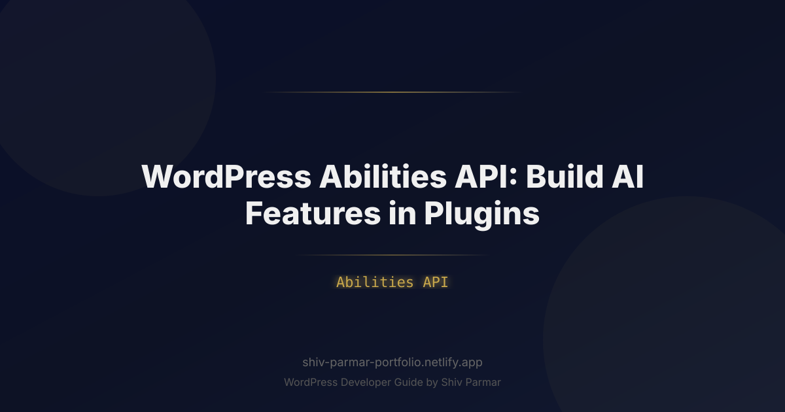

WordPress Abilities API: Build AI Features in | Shiv Parmar
Table of Contents
The era of treating Artificial Intelligence as a glorified wrapper around an external completion endpoint is over. Until recently, adding AI features to a WordPress plugin usually meant hardcoding a cURL request to OpenAI, passing raw prompt strings, and praying that the resulting unstructured text didn't break the client's frontend layout. This fragile, isolated pattern created bloated plugins, massive security blind spots, and an architectural nightmare where no two plugins could collaborate or expose their functionality to autonomous workflows.
Enter the Abilities API: an emerging, standardized architectural pattern within the modern WordPress ecosystem designed to bridge generative models, administrative tools, and plugin logic. By treating plugin capabilities as structured, discoverable, and permission-aware tools, the Abilities API enables developers to build sophisticated AI features that can be safely invoked by Large Language Models (LLMs), internal site agents, and Gutenberg blocks alike.
For modern WordPress engineers, mastering this paradigm is no longer optional. Whether you are engineering an automated content pipeline, an intelligent WooCommerce inventory assistant, or an enterprise customer service copilot, understanding how to expose, validate, and execute discrete tasks via the Abilities API is the cornerstone of modern plugin development.
What is the WordPress Abilities API?
The Abilities API is a declarative framework that allows plugins to register discrete, executable capabilities—termed "abilities" or "tools"—with WordPress core. Much like the REST API exposes endpoints for external HTTP consumers, the Abilities API exposes safe, typed, and permission-checked functional interfaces for consumption by algorithmic dispatchers, notably LLM tool-calling (function calling) routines.
Traditionally, if an AI agent wanted to "update a post's meta" or "generate an inventory forecast," a developer had to write custom webhook handlers, build brittle prompt chains to extract JSON, manually sanitize inputs, verify user capabilities, and invoke native functions. The Abilities API formalizes this pipeline into a unified contract comprising five essential pillars:
- Namespace & Identifier: A unique hook (e.g.,
my-plugin/generate-alt-text) identifying the action. - Schema Definition: Strict JSON Schema typing that defines expected inputs, acceptable parameters, and return types, serving as the system prompt context for tool-calling LLMs.
- Permission & Capability Boundary: Native integration with WordPress roles (
current_user_can()), ensuring autonomous agents cannot bypass site authorization. - Execution Callback: The deterministic PHP callable that runs when the model chooses to invoke the ability.
- Contextual Output Formatter: A standardized serialization layer that translates PHP return values into structured messages optimized for token efficiency and LLM comprehension.
| Dimension | Direct API / Raw Prompt Approach | Abilities API Pattern |
|---|---|---|
| Architecture | Monolithic, tightly coupled prompt-and-call logic. | Decoupled, modular tool registration pattern. |
| Security & Auth | Scattered manual checks; prone to privilege escalation. | Centralized WordPress capability & nonce validation. |
| Model Agnosticism | Locked to specific providers (e.g., OpenAI-only). | Model-agnostic; exports to OpenAI, Claude, or local LLMs. |
| Interoperability | Zero cross-plugin awareness. | Plugins can discover and trigger third-party abilities. |
Why the Abilities API Matters in 2026
The shift toward agentic AI workflows has completely altered how users interact with content management systems. Site operators no longer want an AI chat box sitting inside an isolated sidebar that simply drafts text for them to manually copy and paste. They demand dynamic, autonomous assistants capable of performing multi-step operations: "Audit my last five published posts, generate SEO-friendly meta descriptions, update the alt tags on all uncaptioned images, and notify the editor on Slack."
Executing that prompt requires orchestration across multiple plugins. Without a standardized interface, achieving this would require bespoke integration between an SEO plugin, an image optimization plugin, and an automation bridge. The Abilities API solves this friction point through several critical vectors:
1. Universal Tool-Calling Interoperability
Modern models—such as OpenAI's GPT-4o, Anthropic's Claude 3.5 Sonnet, and open-weights models like Llama 3—rely fundamentally on structured tool calling. By registering abilities in a native WordPress format that mirrors JSON Schema standards, any orchestrator can query the site's capability registry, convert those definitions into model-native tool calls, and execute actions with precision.
2. The Imperative of Zero-Trust Security
In autonomous agent contexts, prompt injection is a critical vulnerability. If an unvetted LLM receives an instruction from untrusted user input (like a comment or form submission) telling it to delete posts or create administrator accounts, standard scripts might execute the directive blindly. The Abilities API prevents this by strictly enforcing native WordPress capability checks (e.g., edit_others_posts, manage_options) at the functional execution boundary, independent of model instructions.
3. Reducing Token Consumption and Overhead
Dumping entire plugin interfaces or massive database models into an LLM's system prompt wastes contextual bandwidth and incurs substantial API fees. The Abilities API allows plugins to register compact schemas. The orchestrator exposes only relevant abilities based on the user's current view or explicit intent, preserving tokens and drastically reducing response latency.
Step-by-Step Guide to Building AI Features with the Abilities API
To demonstrate the power of this pattern in modern plugin development, let's build an enterprise-ready feature: an AI-driven Content Health Auditor. This ability analyzes a post, identifies missing contextual metadata, generates an optimized meta description, and writes it directly to the database via native APIs.
Step 1: Setting Up the Ability Registry Pattern
While the native core implementation continues to evolve, high-performance plugins implement a registry pattern that hooks directly into WordPress init routines. First, let's establish our core container class that manages ability registration.
<?php
declare(strict_types=1);
namespace MyPlugin\AI\Abilities;
final class AbilityRegistry {
private static ?AbilityRegistry $instance = null;
private array $abilities = [];
public static function get_instance(): self {
if (null === self::$instance) {
self::$instance = new self();
}
return self::$instance;
}
private function __construct() {}
/**
* Register a new executable ability.
*
* @param string $id Unique identifier (namespaced)
* @param array $args Configuration arguments
*/
public function register_ability(string $id, array $args): bool {
if (isset($this->abilities[$id])) {
_doing_it_wrong(__METHOD__, esc_html("Ability '{$id}' is already registered."), '1.0.0');
return false;
}
$defaults = [
'label' => '',
'description' => '',
'input_schema' => [],
'output_schema' => [],
'permission_callback' => '__return_null',
'execute_callback' => '__return_null',
];
$this->abilities[$id] = wp_parse_args($args, $defaults);
return true;
}
public function get_ability(string $id): ?array {
return $this->abilities[$id] ?? null;
}
public function get_all_abilities(): array {
return $this->abilities;
}
}
Step 2: Defining Schemas and Input Validation (JSON Schema)
LLMs rely on precise instructions to accurately structure function parameters. The schema must strictly dictate data types, default values, and required fields. Here, we register our specific ability: myplugin/update_post_seo_meta.
<?php
declare(strict_types=1);
namespace MyPlugin\AI\Abilities;
add_action('init', function() {
$registry = AbilityRegistry::get_instance();
$registry->register_ability('myplugin/update_post_seo_meta', [
'label' => __('Update Post SEO Metadata', 'my-plugin'),
'description' => __('Updates the meta description and primary focus keyword for a designated WordPress post.', 'my-plugin'),
'input_schema' => [
'type' => 'object',
'properties' => [
'post_id' => [
'type' => 'integer',
'description' => 'The unique ID of the post to update.',
],
'meta_description' => [
'type' => 'string',
'description' => 'The newly synthesized SEO meta description, maximum 160 characters.',
'maxLength' => 160,
],
'focus_keyword' => [
'type' => 'string',
'description' => 'The primary keyword target for the post.',
],
],
'required' => ['post_id', 'meta_description'],
'additionalProperties' => false,
],
'output_schema' => [
'type' => 'object',
'properties' => [
'success' => ['type' => 'boolean'],
'post_id' => ['type' => 'integer'],
'message' => ['type' => 'string'],
],
],
'permission_callback' => function(array $input): bool {
$post_id = absint($input['post_id'] ?? 0);
if (! $post_id || ! get_post($post_id)) {
return false;
}
return current_user_can('edit_post', $post_id);
},
'execute_callback' => [MetaDescriptionHandler::class, 'execute'],
]);
});
Step 3: Implementing Secure Execution Handlers
The execution handler is isolated from both the prompt and the transport layer. It must treat incoming data as untrusted, validate it against the registered JSON Schema, execute the WordPress update, and return structured output or a detailed WP_Error.
<?php
declare(strict_types=1);
namespace MyPlugin\AI\Abilities;
use WP_Error;
final class MetaDescriptionHandler {
/**
* Executes the SEO update action.
*
* @param array $params Clean, pre-validated parameters.
* @return array|WP_Error
*/
public static function execute(array $params) {
$post_id = absint($params['post_id']);
$meta_description = sanitize_text_field($params['meta_description']);
$focus_keyword = sanitize_text_field($params['focus_keyword'] ?? '');
// Defense-in-depth: Re-verify existence and locks
if (wp_check_post_lock($post_id)) {
return new WP_Error(
'post_locked',
__('Cannot update post metadata; post is currently locked by another user.', 'my-plugin'),
['status' => 423]
);
}
// Update post meta using WordPress standard APIs
$updated_desc = update_post_meta($post_id, '_myplugin_seo_description', $meta_description);
if (! empty($focus_keyword)) {
update_post_meta($post_id, '_myplugin_seo_focus_keyword', $focus_keyword);
}
// Return a structured payload for LLM comprehension
return [
'success' => true,
'post_id' => $post_id,
'message' => sprintf('Successfully updated SEO metadata for post ID %d.', $post_id),
'data' => [
'updated_description' => $meta_description,
'updated_keyword' => $focus_keyword,
],
];
}
}
Step 4: Connecting the Abilities API to Model Providers via Tool Calling
Now that the ability is registered, we need an orchestrator that translates registered abilities into the format required by modern models (e.g., the OpenAI Tool/Function format) and dispatches execution when a tool call is returned.
<?php
declare(strict_types=1);
namespace MyPlugin\AI\Engine;
use MyPlugin\AI\Abilities\AbilityRegistry;
use WP_Error;
final class LLMOrchestrator {
private string $api_key;
public function __construct(string $api_key) {
$this->api_key = $api_key;
}
/**
* Map all registered abilities to OpenAI Tool Schema.
*/
public function get_tools_for_model(): array {
$abilities = AbilityRegistry::get_instance()->get_all_abilities();
$tools = [];
foreach ($abilities as $id => $ability) {
$tools[] = [
'type' => 'function',
'function' => [
'name' => str_replace('/', '__', $id), // OpenAI requires [a-zA-Z0-9_-]
'description' => $ability['description'],
'parameters' => $ability['input_schema'],
],
];
}
return $tools;
}
/**
* Dispatch an incoming tool call from the LLM back to the Abilities API.
*/
public function dispatch_tool_call(string $sanitized_function_name, array $arguments) {
$ability_id = str_replace('__', '/', $sanitized_function_name);
$ability = AbilityRegistry::get_instance()->get_ability($ability_id);
if (! $ability) {
return new WP_Error('unknown_ability', "Ability {$ability_id} does not exist.");
}
// 1. Permission check
if (! call_user_func($ability['permission_callback'], $arguments)) {
return new WP_Error('forbidden', 'Current user or context is not authorized to execute this ability.');
}
// 2. Execution
return call_user_func($ability['execute_callback'], $arguments);
}
}
| Component | Target Standard | WordPress Equivalent |
|---|---|---|
| Schema Definition | JSON Schema Draft 7 / 2020-12 | rest_validate_value_from_schema() |
| Auth Validation | RBAC / Scoped Tokens | current_user_can() + Nonces |
| Dispatch Mapping | OpenAI / Anthropic Tool Calling | Action Hooks & Filters (apply_filters) |
| Data Mutability | Idempotent Mutations | WordPress Meta / Post Core Tables |
Step 5: Frontend Integration with Gutenberg and Admin UI
Modern AI features must surface seamlessly in the block editor. Using standard @wordpress/data and the REST API, Gutenberg can query available abilities, request AI intervention, and reflect state changes in real time.
Here is an example of an editor sidebar component interacting with our backend ability via custom REST endpoints:
import { useState } from '@wordpress/element';
import { Button, Spinner, PanelBody } from '@wordpress/components';
import { useSelect, useDispatch } from '@wordpress/data';
import apiFetch from '@wordpress/api-fetch';
export const AISeoSidebarPanel = () => {
const [ isLoading, setIsLoading ] = useState( false );
const [ feedback, setFeedback ] = useState( '' );
const postId = useSelect( ( select ) => select( 'core/editor' ).getCurrentPostId(), [] );
const { editPost } = useDispatch( 'core/editor' );
const handleGenerateSEO = async () => {
setIsLoading( true );
setFeedback( '' );
try {
const response = await apiFetch( {
path: `/myplugin/v1/execute-ability`,
method: 'POST',
data: {
ability_id: 'myplugin/update_post_seo_meta',
context: { post_id: postId },
},
} );
if ( response.success ) {
setFeedback( 'SEO Metadata optimized and applied successfully!' );
}
} catch ( error ) {
setFeedback( error.message || 'Error executing AI capability.' );
} finally {
setIsLoading( false );
}
};
return (
<PanelBody title="AI SEO Assistant" initialOpen={ true }>
<p>Generate and update meta descriptions automatically using internal site models.</p>
<Button
variant="primary"
onClick={ handleGenerateSEO }
disabled={ isLoading }
>
{ isLoading ? <Spinner /> : 'Run SEO Optimization' }
</Button>
{ feedback && <p style={ { marginTop: '10px', fontSize: '13px' } }>{ feedback }</p> }
</PanelBody>
);
};
Best Practices for AI Plugin Development
Building AI features into plugins introduces unique engineering problems not typically seen in standard CRUD interfaces. Managing token budgets, unpredictable model latency, and non-deterministic generation requires adhering to strict architectural patterns.
1. Enforce Idempotency on Every Ability
Because autonomous AI agents often loop through reasoning steps (e.g., ReAct patterns), they may attempt to call the same ability twice if an initial response is ambiguous. Ensure that running an ability multiple times with identical arguments yields the same state. For operations like record creation, verify unique idempotency keys or hash the arguments against an in-memory or transient lock.
2. Never Rely on Client-Side or Model-Side Authorization
A core rule in secure plugin development is that an LLM has no authorization clearance of its own. It inherits permissions solely from the authenticated WordPress user context invoking the agent. If an author clicks "Generate Draft", the ability executed in the background must verify that the author has the edit_posts capability for that specific post. Never allow an agent to specify an arbitrary user ID to execute a capability under elevated rights.
3. Implement Strict Token-Saving Context Windows
Do not pass entire post objects, complete CSS files, or massive database dumps into the model’s context. Build purpose-specific extractors that clean and slice post content down to the essentials (e.g., post title, excerpt, and the first 500 words) before generating input arguments. This minimizes token usage, cuts latency, and limits hallucination risks.
4. Design Human-in-the-Loop Safeguards for Destructive Actions
Classify abilities by risk profile:
- Read-Only: Scanning data, retrieving taxonomy terms, calculating read time (Safe for full autonomy).
- Reversible Mutation: Drafting post meta, creating a revision, generating tags (Autonomous with simple undo).
- Destructive Mutation: Trashing posts, altering WooCommerce base prices, dropping database tables (Requires explicit user confirmation).
For destructive actions, design abilities that prepare a "dry-run" state or draft changes, requiring an administrative user to confirm the mutation via the UI before executing it.
5. Build Comprehensive Audit Logging
Track every AI ability execution in a dedicated log table or logging service. Store the user ID, timestamp, invoked ability, input arguments, model output tokens, and the execution status. If an agent modifies 100 posts unexpectedly, having an immutable audit trail is the difference between an easy revert and a disastrous database restoration.
Common Mistakes to Avoid
When working with the Abilities API and agentic workflows, developers frequently stumble into predictable traps. Addressing these issues early prevents security failures and maintainability nightmares.
1. Blind Execution of LLM Arguments
Models make mistakes. A model might generate {"post_id": "latest"} even if your schema explicitly specifies an integer. Failing to validate parameters against your JSON Schema before executing your PHP callback leads to uncaught type errors, PHP fatal errors, or dangerous SQL injection vectors. Always sanitize and run parameters through rest_validate_value_from_schema() prior to execution.
2. Bypassing WordPress Core APIs
Never write direct SQL queries ($wpdb->query(...)) inside an ability callback to mutate post data or terms. Always use native abstractions such as wp_update_post(), update_post_meta(), and wp_set_object_terms(). Using core APIs ensures that post revisions are preserved, cache invalidation hooks run, action hooks fire for third-party integrations, and user activity plugins log changes accurately.
3. Tight Provider Coupling
Avoid baking OpenAI or Anthropic SDKs directly into your ability handlers. The ability callback should know nothing about which model is orchestrating it. It should simply be a clean, callable PHP routine that accepts an array of arguments and returns an array of results. All model translation, JSON parsing, and network transport should remain isolated in a dedicated orchestration layer.
4. Ignoring Infinite Execution Loops
When building multi-step agent features where a model recursively calls abilities until a goal is achieved, always implement a strict execution cap (e.g., maximum 5 iterations). If a model encounters unexpected output from an ability, it can loop indefinitely, exhausting your server’s PHP execution timeout and draining your third-party API wallet within minutes.
// Anti-Pattern: Unbounded recursive tool execution
while ($response->hasToolCalls()) {
$this->executeAbility($response->getToolCall());
}
// Correct: Enforce strict step bounds and time limits
$max_steps = 5;
$step_count = 0;
while ($response->hasToolCalls() && $step_count < $max_steps) {
$step_count++;
$result = $this->executeAbility($response->getToolCall());
if (is_wp_error($result)) {
// Break early on critical failures
break;
}
}
5. Neglecting Error Messaging Clarity
When an ability execution fails (for example, if a post ID is not found), developers often return a generic false or a standard HTTP 500 error. For an AI model, this is unhelpful context. Return explicit error messages: {"success": false, "error": "Post ID 402 does not exist or has been permanently deleted."}. Clear semantic error strings enable the model to correct its logic, adjust parameters, or politely inform the user of the exact issue instead of crashing the interaction.
Conclusion
The WordPress Abilities API represents a significant evolution in modern plugin development, bridging the gap between core CMS architecture and intelligent automation. By establishing a standardized framework to register and invoke tools, it provides developers with a clear blueprint to build scalable, context-aware AI features directly into their plugins. Whether you are streamlining content creation workflows, generating dynamic metadata, or building autonomous admin assistants, adopting the Abilities API ensures your code remains extensible, secure, and aligned with WordPress best practices.
As intelligent tools become an everyday expectation rather than an afterthought, adopting these standardized APIs early will set your work apart. Integrating robust AI features is no longer just about novelty—it is about shipping smarter software that solves tangible problems for users while maintaining a clean, native WordPress experience.
Ready to bring cutting-edge capabilities to your next project? Whether you need custom plugin development, integration of the Abilities API, or end-to-end architectural guidance, Shiv Parmar is available for WordPress development work worldwide. Reach out today to turn your innovative ideas into powerful, future-ready WordPress solutions.